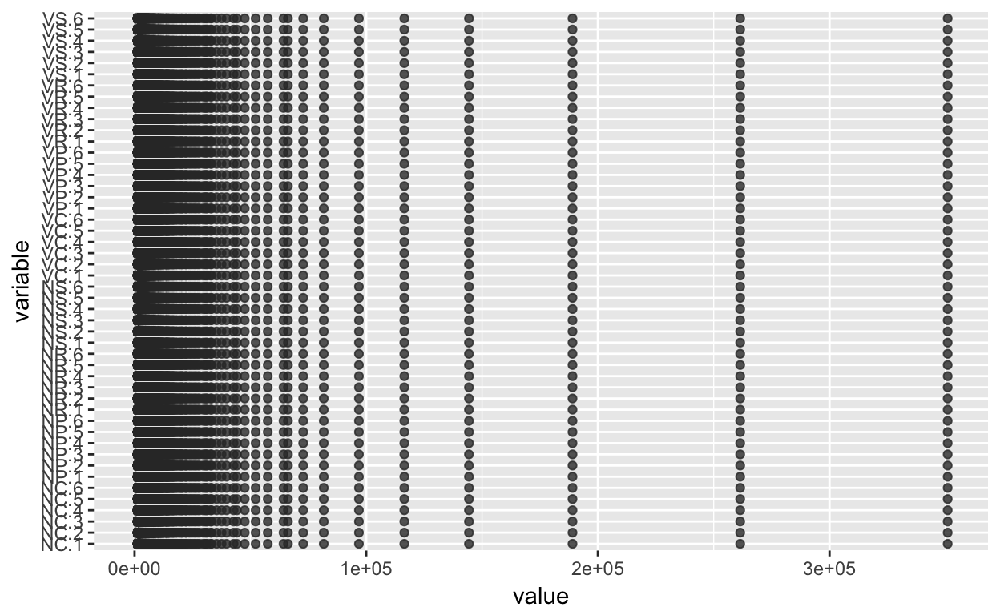
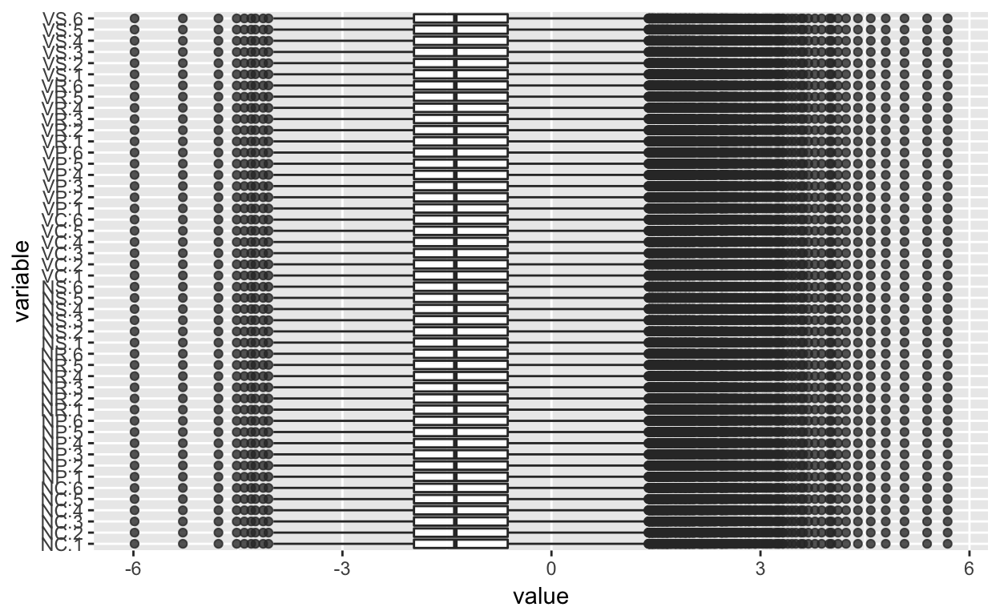
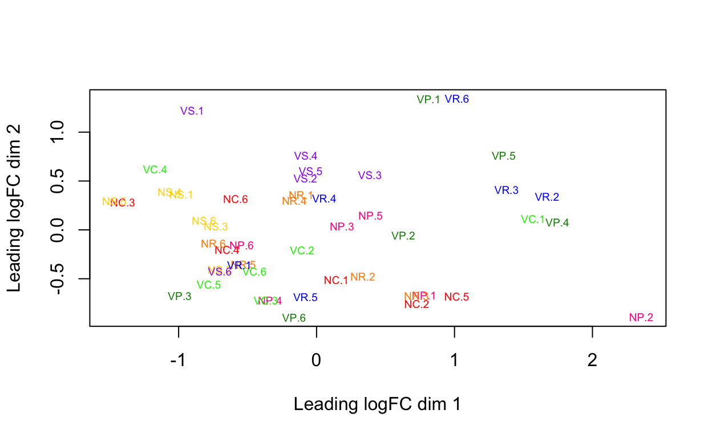
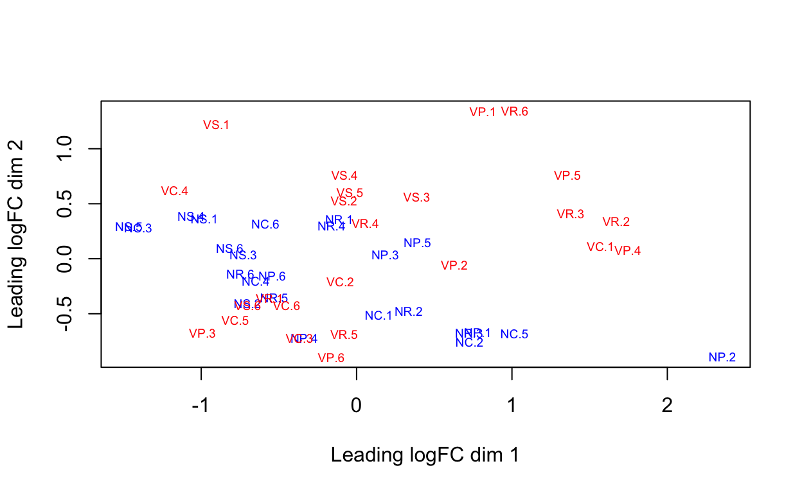
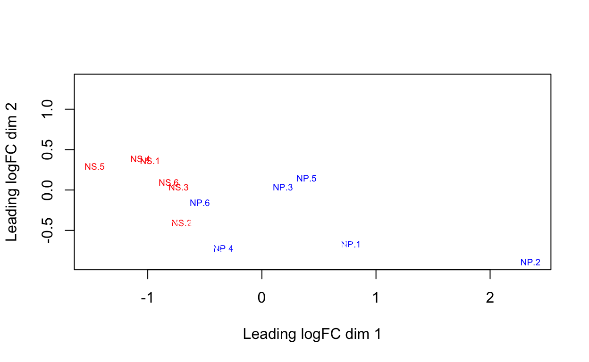
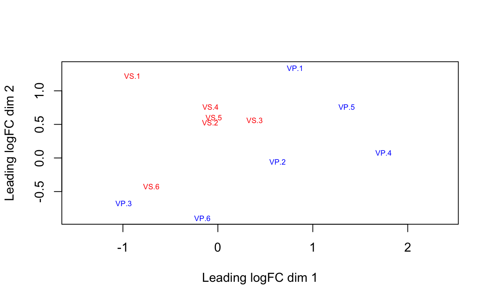
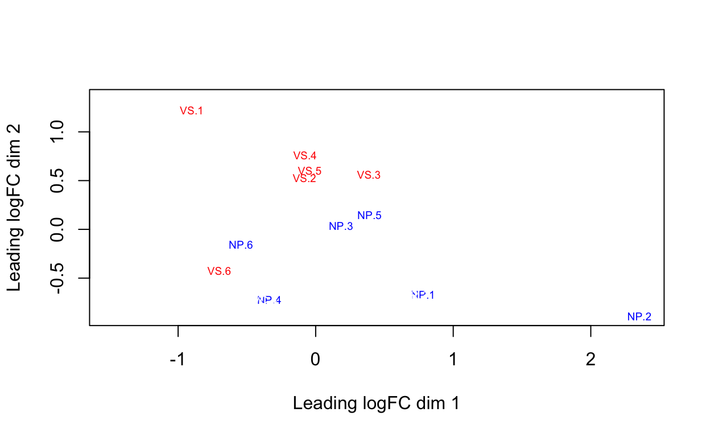
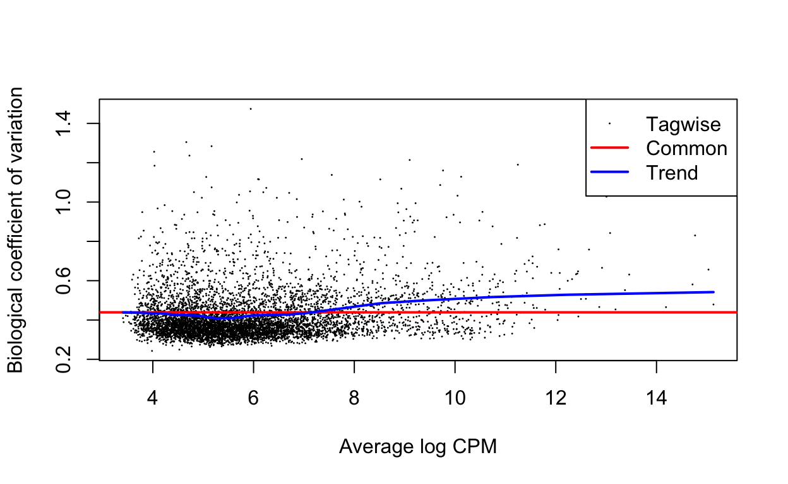

library(edgeR)
library(ggplot2)
library(GGally)
library(EDASeq)
library(utils)
thisPath <- "/Users/lindz/BeeVirusDiet/edgeR-btwnLane-QFilter"
beeCounts <-read.delim(file="../AllLaneCount.txt",row.names=1,stringsAsFactors = FALSE)
colnames(beeCounts) <- c("NC.1", "NC.2", "NR.1", "VR.1", "NS.1", "VP.1", "NS.2", "VR.2", "NP.1", "VP.2", "VC.1", "NP.2", "VP.3", "NP.3", "VS.1", "VS.2", "VC.2", "NC.3", "VP.4", "NC.4", "NR.2", "VC.3", "VC.4", "NP.4", "VR.3", "NC.5", "VS.3", "NP.5", "VC.5", "VS.4", "NS.3", "VS.5", "VP.5", "NR.3", "NR.4", "VC.6", "NS.4", "NC.6", "NP.6", "VR.4", "NR.5", "NR.6", "NS.5", "VP.6", "NS.6", "VR.5", "VR.6", "VS.6")
beeCounts <- beeCounts[ , order(names(beeCounts))]
y <- DGEList(counts=beeCounts)edgeR vignette states that a gene is required to have a count of 5-10 in a library to be considered expressed in that library. Here minLib is equal to 3.04425910^{6}. A CPM of 3 corresponds to a count of ~9 in the minimum number of samples in a group (24). So, I keep only rows that have that. This reduces the number of genes from 15,314 to 8,581.
minLib <- min(y$samples$lib.size)
keep <- rowSums(cpm(y)>3) >= 24
# Number of genes 15,314--> 8,581
y <- y[keep, , keep.lib.sizes=FALSE]Next, I apply strict quartile filtering.
RowSD = function(x) {
sqrt(rowSums((x - rowMeans(x))^2)/(dim(x)[2] - 1))
}
yMutate <- as.data.frame(y[[1]])
yMutate = mutate(yMutate, mean = rowMeans(y[[1]]), stdev = RowSD(y[[1]]))
rownames(yMutate)=rownames(y[[1]])
# The first quartile threshold of mean counts across the 5 samples
q1Tm = as.numeric(summary(yMutate$mean)["1st Qu."])
# The first quartile threshold of standard deviation across the 5 samples
q1Ts = as.numeric(summary(yMutate$stdev)["1st Qu."])
# Out of 8185 genes, keep 6114 and discard 2467
keepIndex = which(yMutate$mean > q1Tm & yMutate$stdev > q1Ts)
discardIndex = which(!(yMutate$mean > q1Tm & yMutate$stdev > q1Ts))
yMutateQ1 = yMutate[keepIndex,]
filt = yMutate[discardIndex,]
yMutateQ1 = yMutateQ1[ , !(names(yMutateQ1) %in% c("mean","stdev"))]
filt = filt[ , !(names(filt) %in% c("mean","stdev"))]
y = DGEList(counts=yMutateQ1)Next, I used EDASeq normalization.
y[[1]] <- betweenLaneNormalization(y[[1]], which="full", round=FALSE)I can create boxplot and RLE boxplot.
ggparcoord(data.frame(y[[1]]), columns=1:48, alphaLines=0, boxplot=TRUE, scale="globalminmax") + coord_flip()
ggparcoord(data.frame(log(y[[1]]/colMeans(y[[1]]))), columns=1:48, alphaLines=0, boxplot=TRUE, scale="globalminmax") + coord_flip()
I can create MDS plots of interest.
allGroups <- c(rep("NC",6), rep("NP",6), rep("NR",6), rep("NS",6), rep("VC",6), rep("VP",6), rep("VR",6), rep("VS",6))
y$samples$group <- allGroups
plotMDS(y, col = c("red","deeppink","darkorange","gold","green2", "green4","blue", "purple")[factor(allGroups)], cex=0.6)
plotMDS(y, col = c("blue","blue","blue","blue","red","red","red","red")[factor(allGroups)], cex=0.6)
plotMDS(y, col = c("white","blue","white","red","white","white","white","white")[factor(allGroups)], cex=0.6)
plotMDS(y, col = c("white","white","white","white","white","blue","white","red")[factor(allGroups)], cex=0.6)
plotMDS(y, col = c("white","blue","white","white","white","white","white","red")[factor(allGroups)], cex=0.6)
Copying Section (3.3.1 in edgeR vignette)
Group = factor(c(rep("NC",6), rep("NP",6), rep("NR",6), rep("NS",6), rep("VC",6), rep("VP",6), rep("VR",6), rep("VS",6)))
targets <- data.frame(rownames=paste0("Sample",1:48), Virus = c(rep("N",24), rep("V",24)), Diet = c(rep("C",6), rep("P",6), rep("R",6), rep("S",6), rep("C",6), rep("P",6), rep("R",6), rep("S",6)),
Group = Group)
design <- model.matrix(~0+Group, data=y$samples)
colnames(design) <- levels(Group)
y <- estimateDisp(y, design)
plotBCV(y)
fit <- glmFit(y, design)
myContrasts <- makeContrasts(
VvsN = (VC+VS+VP+VR)-(NC+NS+NP+NR),
NSvsNP = NS-NP,
VSvsVP = VS-VP,
NPvsVS = NP-VS,
NSNPvVSVP = (NS-NP)-(VS-VP),
levels=design)Contained 188 DEGs
VvsN_DEG <- glmLRT(fit, contrast=myContrasts[,"VvsN"])
VvsN_DEG <- topTags(VvsN_DEG, n = nrow(y[[1]]))[[1]]
VvsN_DEG <- VvsN_DEG[which(VvsN_DEG$FDR<0.05),]Contained 2,464 DEGs
NSvsNP_DEG <- glmLRT(fit, contrast=myContrasts[,"NSvsNP"])
NSvsNP_DEG <- topTags(NSvsNP_DEG, n = nrow(y[[1]]))[[1]]
NSvsNP_DEG <- NSvsNP_DEG[which(NSvsNP_DEG$FDR<0.05),]Contained 23 DEGs
VSvsVP_DEG <- glmLRT(fit, contrast=myContrasts[,"VSvsVP"])
VSvsVP_DEG <- topTags(VSvsVP_DEG, n = nrow(y[[1]]))[[1]]
VSvsVP_DEG <- NSvsNP_DEG[which(VSvsVP_DEG$FDR<0.05),]Contained 2,144 DEGs
NPvsVS_DEG <- glmLRT(fit, contrast=myContrasts[,"NPvsVS"])
NPvsVS_DEG <- topTags(NPvsVS_DEG, n = nrow(y[[1]]))[[1]]
NPvsVS_DEG <- NSvsNP_DEG[which(NPvsVS_DEG$FDR<0.05),]Contained 0 DEGs
NSNPvVSVP_DEG <- glmLRT(fit, contrast=myContrasts[,"NSNPvVSVP"])
NSNPvVSVP_DEG <- topTags(NSNPvVSVP_DEG, n = nrow(y[[1]]))[[1]]
NSNPvVSVP_DEG <- NSNPvVSVP_DEG[which(NSNPvVSVP_DEG$FDR<0.05),]Below we save the DEGs from all pairwise combinations of treatment groups.
allPairs = data.frame(Treatment1 = factor(), Treatment2 = factor(), NumberDEG = numeric())
for (i in 1:(ncol(fit)-1)){
for (j in (i+1):ncol(fit)){
contrast=rep(0,ncol(fit))
contrast[i]=1
contrast[j]=-1
lrt <- glmLRT(fit, contrast=contrast)
lrt <- topTags(lrt, n = nrow(y[[1]]))[[1]]
lrt <- lrt[which(lrt$FDR<0.05),]
saveRDS(lrt, file=paste0(thisPath, "/DEGPairs/", colnames(fit)[i], colnames(fit)[j],".Rds"))
lrtLength <- nrow(lrt)
allPairs = rbind(allPairs, data.frame(Treatment1 = factor(colnames(fit)[i]), Treatment2 = factor(colnames(fit)[j]), NumberDEG = lrtLength))
}
}
allPairs <- allPairs[order(allPairs$NumberDEG),]
saveRDS(allPairs, file=paste0(thisPath, "/DEGPairs/allPairs.Rds"))allPairs Treatment1 Treatment2 NumberDEG
1 NC NP 0
3 NC NS 0
4 NC VC 0
11 NP VP 0
19 NS VC 0
22 NS VS 0
25 VC VS 0
26 VP VR 0
7 NC VS 1
15 NR VC 1
2 NC NR 2
12 NP VR 13
18 NR VS 30
5 NC VP 33
17 NR VR 106
24 VC VR 148
6 NC VR 156
8 NP NR 175
16 NR VP 218
28 VR VS 390
10 NP VC 556
23 VC VP 1198
13 NP VS 1634
27 VP VS 1657
14 NR NS 1815
9 NP NS 3933
21 NS VR 4240
20 NS VP 4605